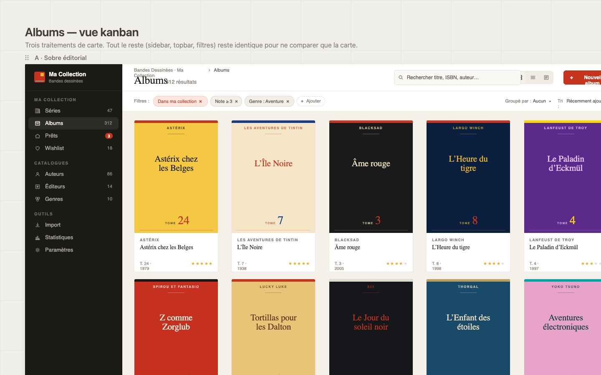
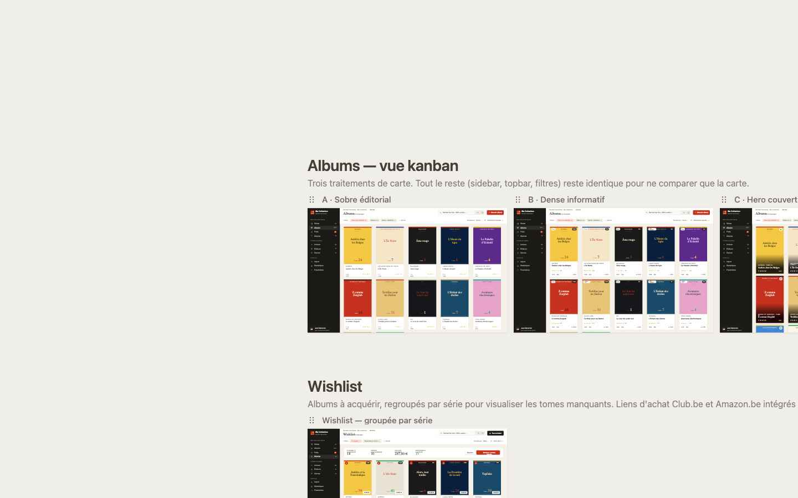

Séries, albums, auteurs, éditeurs, wishlist, import CSV/Excel — tout ce qu'il faut pour le collectionneur exigeant.


Parcourez vos séries et albums sous forme de grille avec les couvertures en grand format. Un placeholder éditorial coloré est affiché automatiquement si la couverture n'est pas encore disponible. Une barre de progression indique les tomes possédés sur le total de chaque série.
Tout collectionneur de bandes dessinées souhaitant gérer sa bibliothèque depuis Odoo : suivi des séries, inventaire des albums, wishlist, auteurs, éditeurs, genres.
Compatible avec les collections BD franco-belge, manga et comics. Conçu pour Odoo 19 Community et Enterprise.